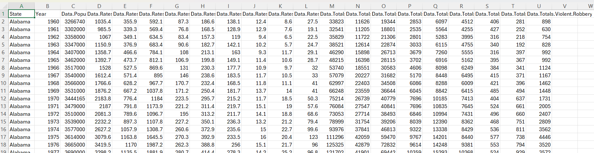
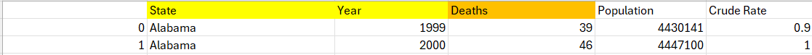

My Tableau
Below is how I conducted my IMD Repeat CA. It will highlight my datasets, process, findings and conclusions. Below is process of how I cretaed this final dashboard.

Datasets
Here are the datasets (unmodified) that I used for this CA.
Questions
Click the button if you are inetrested to find out what questions I asked.
Questions
- What states have the highest crime rates?
- What is the median household income per state?
- Do opioid deaths point to higher crime?
- What is the unemployment of each state?
- Is there a relation between these in terms of crime rate?
The Seven Stages
Section 1 - Acquire
This stage involves searching for datasets that I could later use in Tableau to create visualisations. It took me a while to find a suitable datatset. I eventually settled on a crime dataset that detailed crime (violent and non-violent) in the US from 1960 - 2019 that was on a GitHub and sourced from the FBI. I got two more datasets one also sourced from the FBI and the last from Kaggle. These datasets dealt with various factors that may contribute to crimes such as poverty rate and median household income from the second dataset and opioid deaths from the third dataset.They were all formatted the same way and contained a key column so they could be connected in Tableau later.
Main Dataset:
Section 2 - Parse
This involved me editing the datasets. I would go through the datasets and use forumals to see if there any missing values that needed to be dropped or imputed. I highlighted the columns that I wanted to keep later in yellow, the columns I wanted to keep but had to edit in some way in orange and the columns I didn't want were left untouched. I also made the column names more readable.
Example of my editing process:
Section 3 - Filter
This stage involved me removing any superfluous columns. I just deleted the columns I had not marked
from the previous section or I felt I could not do any good visualisations from or extract any menaingful
data.
Example of filtered dataset:

Section 4 - Mine
The Mine Stage involves looking for any meaningful data or patterns before visualisations begin with the
remaining data. At this stage I created a calculated field by adding two columns togehter (violent and
non-violent crime per state) and took the years and divided them up into decades and called this new column
"Decades". I was also able to connect the datasets through their key column "State" so I could compare all
three. Finally, I conducted a R-Squared statistical test to find how related population was to both violent
and non-violent crime. It was slightly related to non-violent but not so much for violent.
Example of calculated field creation:

Section 5 - Represent
The Represent Stage required me to start making basic graphs and visualisations around my data. This means I
just have make a basic graph of what I want with no filters or marks. This is when I was deciding what would
be the best graphs to show my data off before adding anymore detail and gives a very basic overview of what
they will look like eventually.
Example of basic graph with little detail added:

Section 6 - Refine
This stage involved refining how your graphs look and adding more detail to them. To do this I would add colours
to show the density of crimes, I would add numbers and marks to charts, along with colour to display
different things and added legends to explain in better detail what my graphs meant.
Example of refinement:

Section 7 - Interaction
This stage involves adding some sort of ineteration with any graphs that can have one. I just added a
filter for years so any year or multiple years could be selected to show the amount of violent or
non-violent crime that had been committed by state, respectively.
Example of interaction: